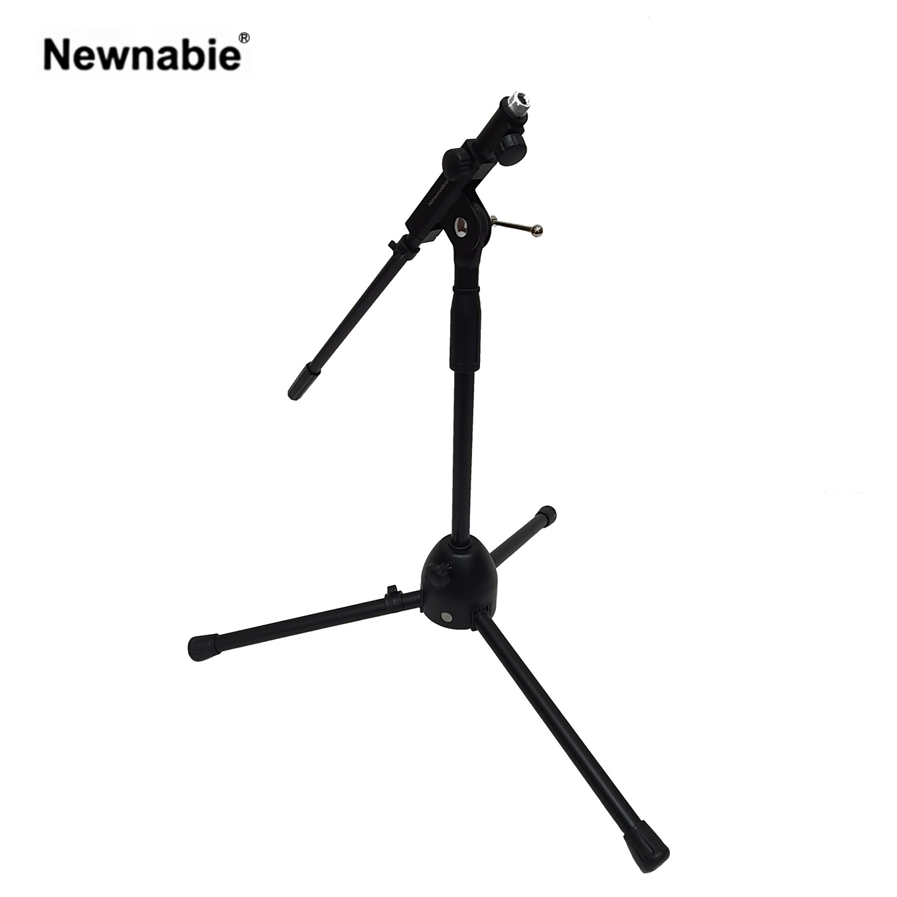

Newnabie NB-305B는 컴팩트한 로우 프로파일 붐 마이크 스탠드로, 2단 T-Bar 구조를 통해 470–750 mm 범위의 붐 길이 조절이 가능합니다. 기타 앰프·드럼킷 하부·근접 악기 수음 등 낮은 포지션이 필요한 환경에 적합하며, 1.8 kg의 가벼운 무게로 다루기도 편리합니다.

기타 앰프·드럼킷 하부·근접 악기 수음을 위한 컴팩트 로우 프로파일 붐 마이크 스탠드. 2단 T-Bar 구조로 다양한 붐 길이 설정이 가능합니다.
NB-305B는 530 mm부터 730 mm의 낮은 높이 범위와 470–750 mm의 2단 T-Bar 붐 구조를 결합한 악기용 마이크 스탠드입니다. DD066 대비 더 콤팩트하고 가벼운 체격으로, 좁은 무대나 스튜디오 실내에서 여러 대를 동시에 배치하기에 유리합니다.
스틸 본체 1.8 kg의 가벼운 무게는 한 손으로 다루기 편한 수준이면서도, 베이스 안정성이 부족하지 않도록 설계되었습니다. 기타 캐비닛 그릴 전면·기타 앰프 측면·드럼 스네어/탐 근접 포지션 등 저위치 악기 수음 전반에 폭넓게 사용됩니다.
| 모델명 | NB-305B |
|---|---|
| 타입 | Compact Instrument Boom Mic Stand (2-Stage T-Bar) |
| Height | 530 – 730 mm |
| Boom (T-Bar) Length | 470 – 750 mm (2단) |
| Material | Steel |
| Net Weight | 1.8 kg |
| 권장소비자가 | 44,000 원 / 개 (VAT 포함) |
※ 본 사양 · 단가는 수입원(현대에이브이씨) 2026-01-01 스탠드 가격표 기준입니다.